Thalassemia Treatment in Bangalore
Thalassemia is an inherited blood disorder in which the body cannot make enough healthy hemoglobin. Low levels cause anemia, tiredness and, in severe forms, a lifelong need for blood transfusions. The good news: thalassemia can be managed well, and for many children it can be cured.

Overview
What is thalassemia?
Hemoglobin is made of two kinds of protein chains, called alpha and beta. In thalassemia, a change in the genes means the body makes too little of one chain. Red blood cells then become small, weak and break down early, which leads to anemia.
Thalassemia is not an infection and not a cancer. It is passed from parents to children through genes, and it is present from birth.
India has more children with thalassemia major than any other country: about 1 to 1.5 lakh children live with it, and 10,000 to 15,000 more are born every year (Union Health Ministry). With the right thalassemia treatment in Bangalore, children and adults with thalassemia can grow, study, work and live full lives.
How is thalassemia inherited?
Thalassemia passes down when both parents carry a faulty gene. Carriers are usually healthy and often don’t know they carry it.
- If both parents are carriers: each pregnancy has a 1 in 4 chance of a child with thalassemia major, a 2 in 4 chance of a carrier child and a 1 in 4 chance of an unaffected child.
- If only one parent is a carrier: children cannot get thalassemia major, but each child has a 1 in 2 chance of being a carrier.
Types
Types of thalassemia
| Type | What it means | Treatment needed |
|---|---|---|
| Thalassemia minor (trait or carrier) | One faulty gene. Usually no symptoms or only mild anemia. | Usually none. Important for marriage and pregnancy planning. |
| Thalassemia intermedia | Moderate anemia that starts later in childhood. | Regular check-ups; transfusions only at times. |
| Thalassemia major (Cooley’s anemia) | Two faulty beta genes. Severe anemia from early childhood. | Regular transfusions and iron removal for life, or a bone marrow transplant. |
| Alpha thalassemia | Ranges from silent carrier to HbH disease to a severe form before birth. | Depends on the type; many need no treatment. |
| HbE beta thalassemia | A mix of HbE and beta thalassemia, more common in eastern India. | Ranges from mild to transfusion-dependent. |
Signs & symptoms
Signs and symptoms of thalassemia
Thalassemia minor usually causes no symptoms. Children with thalassemia major usually show signs between 6 months and 2 years of age:
- Pale skin & tirednessLooking pale and tiring easily
- Poor feedingIrritability and slow weight gain
- JaundiceYellow eyes or skin and dark urine
- Swollen tummyFrom an enlarged spleen or liver
- Slow growthAnd delayed puberty
- Bone changesIn the face and skull, if treatment starts late
Thalassemia symptoms in adults
Adults with thalassemia minor may have mild, lifelong anemia that does not improve with iron tablets. Adults with thalassemia intermedia may have tiredness, bone pain, gallstones or an enlarged spleen.
When should you see a thalassemia specialist?
- Your baby or child is pale, feeding poorly or not gaining weight
- Your blood report shows small red cells or low hemoglobin that does not improve with iron
- You or your partner is a thalassemia carrier and you are planning marriage or a pregnancy
- A family member has thalassemia
- Your child needs blood transfusions and you want to know about a cure
Diagnosis
How is thalassemia diagnosed?
Dr. Neema Bhat may advise some of these thalassemia diagnostic tests:
- 01Complete Blood Count (CBC)
Shows low hemoglobin and small red cells (low MCV and MCH).
- 02Peripheral blood smear
Shows the shape of the red cells under a microscope.
- 03HPLC or hemoglobin electrophoresis
The main thalassemia test. It measures HbA2 and HbF and confirms carriers and thalassemia major.
- 04Iron studies (ferritin)
To tell thalassemia minor apart from iron deficiency, which looks similar on a CBC.
- 05DNA (genetic) test
Finds the exact gene change. Useful for family planning and prenatal testing.
- 06HLA typing
Checks whether a brother or sister is a matching donor for a bone marrow transplant.
- 07Prenatal testing
If both parents are carriers, a test at 10 to 12 weeks of pregnancy (CVS) can show whether the baby is affected.
Treatment
Thalassemia treatment options
Your thalassemia treatment in Bangalore depends on the type and how severe it is. Thalassemia minor usually needs no treatment. For thalassemia major, care has four parts:
Regular blood transfusions
Most children with thalassemia major need safe, filtered blood every 2 to 4 weeks for life. Regular transfusions keep hemoglobin at a healthy level, so the child grows normally and the bones do not change shape.
Iron chelation therapy
Every transfusion adds iron that the body cannot remove. Over time this iron builds up in the heart, liver and glands. Iron chelation medicines (deferasirox and deferiprone tablets, or deferoxamine injections) remove the extra iron and protect these organs. They must be taken every day.
Regular monitoring
Serum ferritin is checked every few months. Older children and adults also need yearly heart and liver MRI scans (T2*) to measure iron, along with tests for growth, thyroid, diabetes and bone health.
Supportive care
- Folic acid, calcium and vitamin D as advised
- Vaccines, including hepatitis B
- Hydroxyurea for some people with thalassemia intermedia or HbE beta thalassemia
- Newer medicines that can reduce transfusion needs in some adults
Do not take iron tablets unless your doctor confirms you are low in iron. People with thalassemia, including carriers, can build up too much iron.
A cure
Bone marrow transplant: the cure for thalassemia
A bone marrow (stem cell) transplant is currently the only established cure for thalassemia major in India. Healthy stem cells from a matched donor replace the patient’s bone marrow, so the body starts making normal red blood cells. After a successful transplant, the child no longer needs transfusions or iron chelation.
What families should know
- The best donor is a fully matched brother or sister. Each sibling has a 1 in 4 chance of being a full match, so HLA typing of the whole family is the first step.
- Earlier is better. Results are best when the child is young, has had good chelation and has little iron damage to the liver.
- Other donors: if no sibling matches, a matched unrelated donor from a donor registry, or a half-matched parent, may be possible in an experienced centre.
- Gene therapy is approved in some countries and is being studied in India, but it is not yet routinely available here.
Cost of thalassemia treatment in Bangalore
Costs depend on the type of thalassemia and the treatment chosen:
- Lifelong transfusion care: transfusions every few weeks, daily chelation medicines and regular tests. This is an ongoing monthly cost for life.
- Bone marrow transplant: a one-time cost that usually ranges from ₹15 to ₹25 lakh in India, depending on the donor type and the child’s condition.
- Carrier test (HPLC): a simple, low-cost blood test.
The clinic can give you a personalised estimate after the first consultation.
Financial help and free treatment options
- Thalassemia Bal Sewa Yojana: Coal India’s scheme gives up to ₹10 lakh towards a bone marrow transplant for eligible children aged 12 or younger, from families earning up to ₹8 lakh a year, at empanelled hospitals.
- Day care and NGO support: Bangalore has thalassemia day care centres and patient groups that help with transfusions and medicines, such as the Thalassaemia and Sickle Cell Society of Bangalore.
- Insurance and CSR funds: some insurance policies and company CSR programmes support transplant costs. The team can guide you through the paperwork.
Complications
Complications of thalassemia
Without regular treatment, or if iron is not removed well, thalassemia can cause:
- Heart problems
An irregular heartbeat and heart failure, from iron overload.
- Liver damage
And gallstones.
- Hormone problems
Diabetes, thyroid problems and delayed puberty.
- Weak bones
Osteoporosis and bone changes in the face.
- Enlarged spleen
And a higher risk of infections.
- Slow growth
In children.
Good transfusion care, daily chelation and regular check-ups prevent most of these problems.
Preventing thalassemia: carrier test before marriage and pregnancy
Thalassemia major can be prevented. A simple HPLC blood test shows whether you are a carrier. It is best done:
- Before marriage, especially if someone in the family has thalassemia
- Before planning a pregnancy, or early in pregnancy
- For brothers and sisters of anyone with thalassemia
If both partners are carriers, genetic counselling and a prenatal test at 10 to 12 weeks of pregnancy can show whether the baby is affected, so families can plan with full information.
Living well with thalassemia
- Keep to the transfusion schedule and never skip chelation medicines
- Eat a balanced diet; avoid iron-rich supplements and tonics unless prescribed
- Stay active; most children can go to school and play sports
- Track ferritin, growth and heart checks in one file and bring it to every visit
- Connect with other families through local thalassemia support groups

About the doctor
Dr. Neema Bhat
- SpecialityHematologist, Pediatric Oncologist & Bone Marrow Transplant Specialist
- EducationMD (USA) · Fellowship (FAAP) in Pediatric Hematology, Oncology & Bone Marrow Transplantation, Penn State Health, USA
Dr. Neema Bhat is a Haemato-Oncologist in Bangalore with more than ten years of experience treating blood disorders and blood cancers in children and adults. For thalassemia, she guides families from carrier testing and transfusion care to a possible cure with bone marrow transplant.
FAQs
Quick answers to the questions families ask most about thalassemia and its treatment.
01Can thalassemia be cured permanently?
Yes. A bone marrow transplant can cure thalassemia major permanently, especially when it is done early with a matched sibling donor. Without a transplant, thalassemia is managed lifelong with transfusions and iron chelation.
02What is the best treatment for thalassemia major?
For children with a matched donor, a bone marrow transplant is the best treatment because it is curative. For others, regular transfusions with good iron chelation give a long and active life.
03How often do thalassemia patients need blood?
Most people with thalassemia major need a transfusion every 2 to 4 weeks. The exact gap depends on their hemoglobin level, age and weight.
04Is thalassemia minor dangerous?
No. Thalassemia minor usually causes no symptoms or only mild anemia and needs no treatment. It matters mainly for family planning, because two carriers can have a child with thalassemia major.
05Can a thalassemia minor person get married?
Yes. A carrier can marry anyone. If both partners are carriers, they should have genetic counselling and prenatal testing in each pregnancy.
06How long do thalassemia major patients live?
With regular transfusions, daily chelation and good follow-up, many people with thalassemia major now live well into adulthood, study, work and have families. A successful transplant offers a normal life expectancy.
07What kind of doctor treats thalassemia?
A hematologist, especially a pediatric hematologist with bone marrow transplant experience, treats thalassemia. Dr. Neema Bhat is a US-trained hematologist in Bangalore who manages both transfusion care and transplant.
08What is the thalassemia treatment cost in India?
Lifelong transfusion care is an ongoing monthly cost. A bone marrow transplant usually costs ₹15 to ₹25 lakh, and schemes such as Thalassemia Bal Sewa Yojana can cover up to ₹10 lakh for eligible children.
09Can I get free or low-cost treatment for thalassemia in Bangalore?
Yes. Government schemes, CSR funds and NGO-run day care centres in Bangalore help with transfusions, medicines and transplant costs. The team can help you check which ones you qualify for.
10Is thalassemia a blood cancer?
No. Thalassemia is an inherited problem with hemoglobin production. It is not cancer and it is not contagious.
Expert thalassemia care, close by
Whether you have just received a carrier report or your child needs transfusions, book a consultation for thalassemia treatment in Bangalore with Dr. Neema Bhat to understand your options, including a possible cure.
- +91 78997 56677 · Call or WhatsApp
Medical disclaimer: This page is for general information only and is not a substitute for medical advice. Please consult a doctor for diagnosis and treatment.